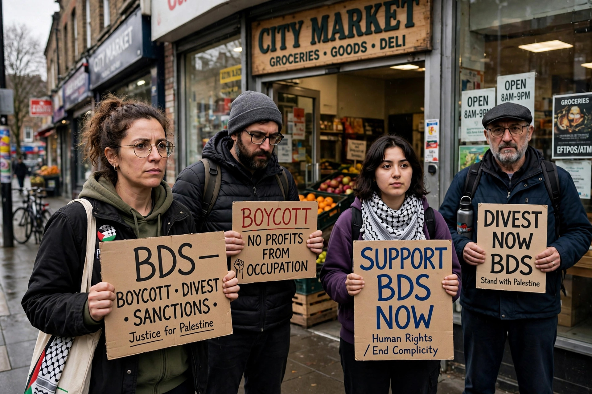

Boycott, Divestment and Sanctions (BDS) is a Palestinian-led movement promoting boycotts, divestment and economic sanctions against Israel. Launched in 2005 by Palestinian civil-society organisations, it calls for pressure on Israel until it complies with what the movement describes as its obligations under international law.

The movement's stated demands are an end to Israel's occupation and colonisation of Arab lands, full equality for Arab-Palestinian citizens of Israel, and recognition of the right of return of Palestinian refugees. It draws inspiration from the anti-apartheid movement against South Africa and earlier Palestinian boycotts.
BDS campaigns target companies and institutions said to be complicit, cultural and academic boycotts, and divestment by universities, churches and pension funds. Supporters describe it as a nonviolent human-rights movement.
Critics, including the Israeli government and many Jewish organisations, argue aspects of the movement are antisemitic or seek Israel's elimination, charges supporters deny. Several countries and US states have enacted anti-BDS measures, which in turn face free-speech challenges.